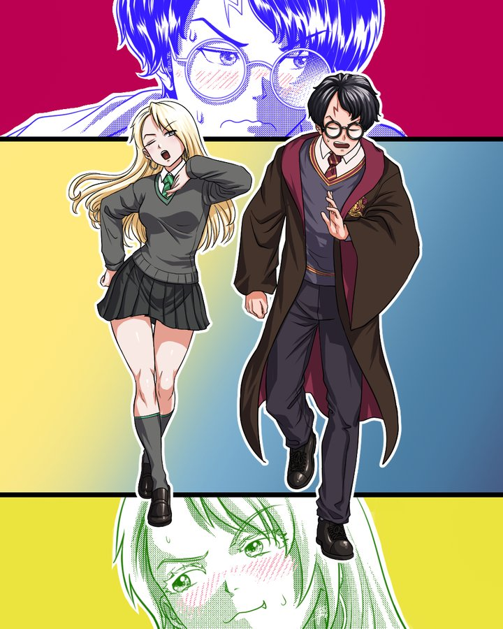

The Lion and the Serpent is the bond between of and of . It began in the summer of 1991 with a refused handshake on the Hogwarts Express and became, over seven years, the defining relationship of both their lives. For three years they were rivals: she the heir of a Death Eater family performing a contempt she was never sure she felt, he the boy whose fairness kept catching on her. Small kindnesses wore the rivalry thin. At the Yule Ball of 1994 it nearly became something more, until an overheard plan and the return of put them on opposite sides of a war., “Relationships”
Through the war each kept reaching for the other across the line. She bled under Dolores Umbridge’s quill for defending him, then drove him away to keep him safe; he nearly killed her with a curse he did not understand, and admitted that night that he loved her. At the edge of the Forbidden Forest she kissed him, believing it was goodbye. At the Battle of Hogwarts her hand closed over his, and together they drove Voldemort’s last curse back into him. After the war she was tried, pardoned and forgiven, and the two of them left Hogwarts together to make a home., “Relationships”
History
The Philosopher’s Stone (1991–1992)
The two first met in the summer of 1991 at Madam Malkin’s robe shop in Diagon Alley, being fitted for Hogwarts robes on neighbouring stools. Dracaena talked at him about brooms, houses and which sorts of people were worth knowing, in the easy way of a child reciting her parents’ opinions, and she bristled when he suggested her father might be wrong about the gamekeeper outside. They parted without trading names. Harry knew only that she reminded him, unpleasantly, of his cousin Dudley., “Diagon Alley”
She learned his name on the Hogwarts Express on 1 September, and came to his compartment with Crabbe and Goyle at her shoulders to introduce herself. Some wizarding families were worth more than others, she told him, and she could teach him to tell which. She held out her hand. Harry, who had already decided he liked Ron Weasley and disliked the company she kept, refused it. No one had ever refused her, and her pride cracked into something more wounded than she let anyone see. That night the Sorting Hat put him in Gryffindor and her, after an argument she conducted out loud in front of the whole hall, in Slytherin., “The Hogwarts Express” and “The Sorting”
She spent the year needling the boy who had turned her down, as much for his attention as for sport. At the first-years’ flying lesson she snatched Neville Longbottom’s Remembrall and dared Harry into the air after it; his catch made him the youngest house Seeker in a century. That evening she challenged him to a midnight duel she never meant to attend. When Hagrid’s dragon was smuggled out of the castle, she tried to get Harry caught and was caught herself., “The Seeker”, “The Third-Floor Corridor” and “Norbert”
Both served the detention in the Forbidden Forest that followed, alongside Hermione Granger and Neville. Terror slowed Dracaena to a crawl, and she and Harry fell behind the others. When a hooded figure rose from the body of a unicorn and came toward them, Harry put himself between it and her, and she bolted into the trees. The centaur Firenze brought her back. In front of the others she called Harry her bodyguard and a worthless peasant, and afterward told him he had been a mediocre one at best., “The Forbidden Forest”
Slytherin won the House Cup that year, and Harry did not seem to mind. On the journey home Dracaena had Crabbe and Goyle keep Ron and Hermione off the train, found Harry alone in his compartment, and, with no one watching, told him he had played well. “You weren’t too bad, for a half-blood, Potter.” She held out her hand a second time, and this time he took it. He had begun to say they could still be friends when Ron and Hermione walked in, and she was a Malfoy again: a sneer, a warning to stay out of her way, and gone., “The Journey Home”
The Chamber of Secrets (1992–1993)
The summer before their second year, Harry’s first journey by Floo powder dropped him into Borgin and Burkes in Knockturn Alley, and from inside a cabinet he saw for the first time, with his daughter. Lucius was cold with the shopkeeper and had him by the collar for remarking on her looks, until she begged him to stop. With her he was something else: he called her “princess”, chided her for letting a Muggle-born girl beat her in every exam, and gave her the Hand of Glory she had begged for. She came within inches of opening Harry’s cabinet. He watched all of it and told no one., “Knockturn Alley” At Flourish and Blotts days later she acted as though the handshake on the train had never happened, and a few cold words from her father put her claws back out. Harry read nothing warmer than control in it, and went on reading it that way for a long time., “Flourish and Blotts”
That autumn her father’s money bought her Slytherin’s Seeker place, and the two became rivals in the air as well as on the ground. When Hermione said on the pitch that Gryffindor’s players had earned their places, Dracaena felt her housemates waiting, and after a visible hesitation forced out the ugliest word she knew. Harry, who had first heard it in her father’s mouth, saw the performance behind it, and the scene unsettled him more than it satisfied him., “Mudblood”
In the season’s first match a rogue Bludger shattered Harry’s arm, and for a moment her taunts came out almost soft before she hardened them again. He caught the Snitch one-handed., “The Bludger” At the Dueling Club her conjured serpent turned on Justin Finch-Fletchley, and Harry called it off in Parseltongue. The school recoiled from him. Dracaena did not crow: she was frightened for him, sure he had not done the terrible things himself, and realizing against all sense that she rather liked him as he was., “The Dueling Club” When Harry and Ron, disguised as Crabbe and Goyle, questioned her in the Slytherin common room, they learned she had nothing to do with the Chamber, and Harry saw behind her bluster a lonely girl performing for companions who weren’t really friends., “Polyjuice”
The year ended with her father stripped of his seat on the board of governors over the diary he had planted, brought low, as she saw it, by Potter once more. Harry’s trick freed the house-elf Dobby, the only member of the Malfoy household she had ever treated kindly, and the news left her oddly glad. She was left with a year of small moments she could not square with the enemy her father insisted Harry was., “Aftermath”
The Prisoner of Azkaban (1993–1994)
At Hagrid’s first Care of Magical Creatures lesson Dracaena insulted the Hippogriff Buckbeak to its face, and it opened her arm. To everyone else she was milking a scratch to ruin a teacher. Harry, who had spent two years learning to read her, saw that she was genuinely frightened of her own blood and had never meant the animal harm. When her father used the injury to have Buckbeak condemned, she spent the weeks that followed visibly wretched, and it was the first time Harry saw her ashamed of what her family’s name was doing in her name., “Buckbeak”
Harry had his own lapse that year. Invisible in Hogsmeade under his father’s Cloak, he saw her tormenting Ron in the lane and pelted her with mud, and she fled in tears with no idea who had done it. His satisfaction turned to shame before she was out of sight. He went after her alone, dropped the Cloak and apologized. It was the first honest moment the two of them had ever shared., “The Marauder’s Map” She was still capable of pettiness: at the Ravenclaw match she, Crabbe and Goyle rose at the edge of the pitch dressed as Dementors, and Harry blasted them with his first full Patronus. But he had begun to tell her pettiness from real malice, and to notice how rarely, when it counted, she chose the malice. In the final he beat her to the Snitch the length of the pitch., “Quidditch”
When Buckbeak’s appeal was lost, the trio cornered her in the grounds, and she pushed Hermione one word too far. Hermione struck her across the face. Ron howled with laughter. Harry didn’t laugh. He had watched her be sick about the creature she pretended not to care about, and he had no appetite for watching her be hit; cruelty aimed at someone already brought low was still cruelty, whoever’s friends it came from. It was principle, not affection, and it caused the trio’s first argument about her. Dracaena, through her tears, saw that he was not laughing, and it was then that she first admitted to herself, privately, what she felt for him., “The Lost Appeal”
The Goblet of Fire (1994–1995)
At the Quidditch World Cup, with masked Death Eaters burning the campsite and her father among them, Dracaena met the trio in the woods and told Hermione, behind a sneer that was plainly also a warning, to keep her head down., “The Quidditch World Cup” When the Goblet of Fire named Harry a fourth champion, her POTTER STINKS badges spread across half the castle. Making them brought her to , the first real friend of her life, and it was Ada who named aloud what Dracaena would not: that she had a real crush on the Potter boy., “Hufflepuff” and “Ada”
Harry had just been turned down for the Yule Ball by when Dracaena found him and came at him sideways: she pitied him, she said, and supposed she’d let him take her if he was so desperate. She had meant it. Harry heard only the blade and sent her away, and she walked off with her chin up and her eyes streaming. That night Harry lay awake turning it over until it looked less like an attack than like someone who had been hurt, while Dracaena wept alone in the dungeons, not at him but at the armored girl she showed the world., “The Invitation”
The making-up wore a disguise. Hermione announced that Malfoy plainly had feelings for Harry, and that an invitation might be the surest way to learn what Lucius was planning. Ron hesitantly agreed. Harry seized the idea faster than he should have, because it gave him a reason he could say out loud for going to apologize. He found her alone, lost his nerve twice, and asked her to be his partner. Her mask came up, then came down, and she said yes., “The Plan”
When the champions opened the ball, the hall went silent at the sight of Harry Potter with Dracaena Malfoy on his arm. For the length of one song every wall she had built came down, and Harry saw the girl beneath the performance for the first time. Whatever the plan had been, it was not the plan anymore. For a few weeks afterward they were quietly something, the warmest stretch the two of them would have for years. One evening she caught him going to the Mirror of Erised in the Room of Requirement; when she looked into it herself, she saw only herself and Harry, and took his Cloak when she left, as a joke between them. She introduced him to Ada, and Ada liked him., “The Yule Ball” At the second task she cheered him on in silence from the stands, though it stung that the judges had chosen Ron as the person he would miss most., “The Second Task”
The Cloak undid it. Wearing it, unseen, she overheard Ron and Hermione speak of the invitation as a plan to get at her father, and fled certain she had been played from the first dance. She could not know the plan had stopped being the plan long before., “Overheard” At the end of the year Voldemort rose again in a graveyard with Lucius Malfoy kneeling in his circle. Dracaena came to Harry carrying both the hurt and the terror, pushed his Cloak back into his hands, and struck him across the face: how dare you use me, and stay away from me before it kills you. Then she gave him her warning and walked away. They were on opposite sides of a war now, and both of them knew it., “The Line”
The Order of the Phoenix (1995–1996)
Across the Great Hall on the first night back, her eyes found his and held for a single moment before the shutter came down. Harry saw someone frightened and furious and breakable, standing on the far side of a war, and spent the year wanting to reach her and refusing to admit it., “The Return” She joined Dolores Umbridge’s Inquisitorial Squad, resigned after the graveyard to being what her family needed., “The Inquisitorial Squad” His Valentine’s Day in Hogsmeade with Chao Zheng fizzled, partly because he kept losing the thread of the conversation to a girl in a green-and-silver scarf across the street., “Valentine’s Day”
One night, on patrol for the Squad, she caught him under his Cloak in an empty corridor and told him she would have to report him. It became the argument neither had ever allowed. Harry was brutally honest about everything she had done and every choice she claimed not to have. He called her a coward. He told her the Yule Ball invitation had been his own choice, whatever his friends had planned. It pierced her because she could not deny a word of it, and for one moment the mask fell. When he stopped fighting and told her to do what she had to, she gave him back his Cloak and let him go. Neither had won anything. Harry walked away holding on to one hope: that the compassion he had once seen in her was still there., “The Corridor”
It was. When Umbridge, now headmistress, sat Harry down with her blood quill again for the truth he had told the Quibbler, with the Squad looking on, Dracaena defied her openly and spoke for him in front of the school. Umbridge gave her the same quill. The words it cut into the back of her hand read I must not defend liars, beside his I must not tell lies, and she was thrown out of the Squad that night. Harry found her afterward and saw her hand, and for a little while they were closer than they had been since the Yule Ball. Then she remembered that Crabbe and Goyle had watched her do it and would write to their fathers, and she turned on Harry more cruelly than she had in years, to drive him clear of whatever was coming. He knew it was a lie. It changed nothing., “Resistance” At the year’s end her father was captured at the Department of Mysteries and sent to Azkaban. Harry did not yet understand what that would cost her., “The Atrium” and “Aftermath”
The Half-Blood Prince (1996–1997)
Voldemort had heard from Crabbe’s and Goyle’s fathers that the Malfoy girl had bled for Harry Potter in front of the school. Her task that summer was a punishment for her father’s failure and a test of her loyalty in the same stroke: mend the Vanishing Cabinet so the Death Eaters could enter Hogwarts, and kill Albus Dumbledore, with her parents’ lives forfeit if she failed. The Dark Mark was burned into her arm against her will., “Spinner’s End” On the Hogwarts Express she found Harry alone and, for once, did not sneer. She said, at length and quietly, everything she had never let herself say: a warning that was also a confession, that whatever might have been between them belonged to a future neither would be allowed to have. Then she froze him where he sat and left. The stillness she left behind was worse than any curse she had ever thrown., “The Train”
Harry spent the year certain she was up to something terrible. He was right, and everyone he told had the same gentle answer ready: he was obsessed with Dracaena Malfoy because of the Yule Ball. There was just enough truth in it to make it unanswerable. He tracked her on the Marauder’s Map and lost her again and again to a room the map couldn’t show, while she came apart at the seams, grey and sleepless., “Ada” Her attempts on Dumbledore went wrong: the necklace struck Katie Bell, and the poisoned mead nearly killed Ron, whom Harry saved with a bezoar., “The Attempts”
In May he finally found her on the Map in a sixth-floor washroom, weeping to Moaning Myrtle that the Dark Lord would kill her and her parents. She saw him and fired. They wrecked the room between them, Harry begging her to stop and listen, until she began a curse he recognized and bit it off half-spoken. Terrified, he reached for a spell he had found in the Half-Blood Prince’s book that same day, marked “for enemies”: . It opened her like a blade. He caught her before she hit the floor and held her as she bled, begging her to stay awake, and she, impossibly, was apologizing too. Severus Snape sang the wounds closed and made Harry carry her to the hospital wing through a crowd that now believed he had tried to murder someone. On that walk Harry stopped pretending to himself. Whatever she was, and whichever side she stood on, she was a victim and not a villain, and he loved her. He went back to the hospital wing when she was out of danger, and burned the Prince’s book himself., “Sectumsempra”
The Cabinet was mended, and Dracaena let the Death Eaters in., “The Night the Death Eaters Came” Frozen under his Cloak on the Astronomy Tower, Harry watched Dumbledore lay down his own wand, and watched her raise her wand to him. With the necklace, the mead, the open door and Ada on the stones behind her, she could not add one more sin to the pile, and she let her own wand fall. Snape killed Dumbledore in her place., “The Tower” In the chase that followed the two of them were close enough to touch, and he reached out his hand to her. She looked at it, and at him, and her face said no for her. Her parents’ lives still hung on her staying. She went with the Death Eaters into the dark., “The Chase” At Dumbledore’s funeral Harry resolved that she could be saved, and that he would pull her off the side she was trapped on if she would let him, and stop her if it came to that., “The Funeral”
The Deathly Hallows (1997–1998)
Harry spent the year on the run hunting Horcruxes, and Dracaena spent it at Hogwarts under Snape and the Carrows, and at the Manor, where Voldemort kept her seated at his councils so that her parents would never forget what her life was worth. Early that summer Dolores Umbridge passed her on the Manor stairs and smiled at the back of her hand., “The Dark Lord’s House” At Hogwarts she refused the Cruciatus Curse in front of a class., “Hogwarts Under Snape”
At Easter Snatchers brought Harry, Ron and Hermione to Malfoy Manor, Harry’s face stung out of shape. Dracaena was made to watch Bellatrix torture Hermione on the drawing-room floor. Then they held the swollen boy up before her and demanded she name him. One word would have ended the war. The Mark on her arm, which had burned at every summons for a year, was quiet as she looked at him, and she said she could not be sure. In the fight that followed she pressed her hawthorn wand into his hand, and afterward told the Death Eaters he had torn it from her., “Malfoy Manor”
On the night of the battle she went to the Room of Requirement to destroy the Dark Lord’s diadem herself. Nothing she cast would mark it, and Crabbe and Goyle followed her in. Crabbe’s Fiendfyre swallowed the room, and in the heart of it she glimpsed an old mirror showing her herself and Harry before the flames took it. Harry, who had come for the diadem too, pulled her out of the fire., “The Room of Requirement”
When Harry learned from Snape’s memories that he had to let Voldemort kill him, he walked out to the forest during the hour’s truce. At the edge of the trees the Mark on Dracaena’s arm went quiet, and she knew he was near before she saw him. She stood in his way with her mother’s wand raised and swore she would stun him before she let him walk in. He held her instead, and told her it was the only way. She kissed him, their first kiss, and begged him to run away with her that night. He would not: if he ran, the castle would die in his place. He did not tell her he loved her, because he would not promise anything he would not live to keep. He put his father’s Cloak into her hands, and she lowered her wand and let him go., “The Forest” Voldemort killed him in the clearing. At the threshold, offered rest with his family, Harry chose to go back: he had left Dracaena at the edge of the trees.
Voldemort laid Harry’s body on the stones before the castle, and his darkness drowned every defender but those who bore his Mark. Dracaena was left alone on her feet. Called forward to be mocked, she felt her Mark burn, and go quiet as she looked at Harry’s body. She turned her wand on the Dark Lord, and as the killing light gathered she thought of Ada, and of Harry at the edge of the forest an hour before, and cast her first Patronus, a silver peacock that drove the dark off the courtyard., “The Darkness” When the battle came back she held the weakened Voldemort alone for a few seconds, until he opened her arm from shoulder to wrist, and her father died taking the curse meant to finish her., “The Last Stand”
Then Harry stood up. Voldemort raised a ward around their duel that only those who bore the Dark Mark could cross, and inside it Harry fought him for a long time with Dracaena’s hawthorn wand. While Ron led the defense that kept the Death Eaters out, Hermione closed the wound in Dracaena’s arm, Ada shielding them both, and sent her after Harry. When the beams locked and Harry began to give, the ward knew her Mark and let her through, and her hand closed over his. With both of them behind it, his Disarming Charm drove Voldemort’s Killing Curse back into its caster, and the Dark Lord fell dead., “The Duel”
The Mark on her arm faded to a scar. Harry could barely stand, and she put his arm across her shoulders and walked him out to the others. When she saw her father among the dead in the Great Hall she slipped away in tears, and Harry went after her, hurt as he was. Alone with him, she apologized for everything and broke down, and he held her, forgave her, and told her it was over. She gave him back his father’s Cloak, and he stayed with her until she was ready to go back. When they did, the whole school saw him come in at her side and leave at it. Before the day was out he brought her to Ron and Hermione: Ron forgave her quickly, and Hermione offered a wary truce. With the Elder Wand Harry gave her back her hawthorn before he snapped it., “After the Battle”
In the weeks that were left of term the four of them studied together. Not everyone was ready to start over: before the trial a crowd cornered Dracaena, Katie Bell among them, and Harry stepped between them, and for many of them it was the first time their anger turned on him. At her trial Katie testified against her; Harry, Hermione, Neville, Ada, Ron and many others testified for her. She was found guilty under duress and pardoned by the new Minister, Kingsley Boltwood, and some called it a favor to Harry Potter. At the ceremony for those who had ended the war, Harry honored her before the whole school. She stood beside him when Snape’s portrait was hung. In the last days of term he asked her to Hogsmeade, and this time they both called it a date, their first. Neither had said what the kiss at the edge of the forest had meant. That day he told her he loved her., “The Last Weeks”, “Aftermath (1998)”
On the last afternoon Harry found her lying in the grass by the lake and told her he was proud of her. Neither of them had anywhere to go back to, and he asked her to live with him and make a home together wherever they could find one. She said yes, and they decided to leave together. The four of them took one compartment on the Hogwarts Express., “The Last Day”
The Summer After (1998)
With nowhere to go, the two of them spent their first weeks of freedom in a hotel in London, learning, a little awkwardly, how to run a life with no one else in charge of it. There Harry learned that the Dursleys were selling number four, Privet Drive. Vernon and Petunia met them at the door in a rage; Dracaena kept silent until she could not, then turned on them herself. Harry gave her the tour of the house, ending at the cupboard under the stairs where he had slept for ten years, and they bought it. Hedwig came home to it and took to Dracaena at once., “On Their Own” and “Number Four, Privet Drive”
On Harry’s eighteenth birthday Dracaena filled the house with his friends for a surprise party, and before the night was out he told her about the date he had planned for them. Their second date was his, down to the last detail. That night they became lovers. Afterward Harry found the scars his own spell had left across her, and he broke down and apologized, and she held him until he could stop., “The Birthday” and “The Second Date”
Still to come
- Their story continues in , which has not been written yet.
- Their story after the merge, in , has not been written yet.
Dynamic
Masks and honesty
For most of their years at school Dracaena spoke to Harry in insults, and what the insults covered changed. Through their first three years they were the contempt she had learned at home, worn over feelings she did not understand: the refused handshake had to be avenged, and the boy who caught Neville’s Remembrall had to be dared. Even then the mask slipped, on the train home in their first year when no one was watching, and in their second when a Bludger shattered his arm and her taunts came out almost soft.
From their third year to the Yule Ball the insults turned playful, with an honesty creeping in under them. She knew which of his buttons to push and when to drop the act, and Harry, who had learned to read her, answered in kind and saw through it. At the Mirror of Erised she could see the two of them together in the glass, then walk off with his Cloak as a joke. After the overheard plan the mask went back up, higher than before, over feelings she now knew. Her cruelty in their fifth and sixth years could sound almost word for word like her first year’s, and it cut deeper, because both of them knew what was underneath. That was why the corridor argument enraged Harry: he could tell she was lying to him. Her worst words to him, after the quill, were chosen on purpose to drive him away, and he knew it. The attached, unguarded side of her that the mask had hidden came out only at the end of the war.
Opposites and equals
In many ways they were opposites. She performed; he was blunt to a fault. She had been adored at home, and he neglected. Her family wanted her to be more than she was, and his wanted him to be less. In other ways they were equals. Both were Seekers, matched against each other from their second year, and his respect for her began in the air. Both were proud and stubborn, and both had been raised in houses that would not let them be themselves: the cupboard under the stairs and Malfoy Manor. When he gave her the tour of number four, it ended at the cupboard. She was a little taller than Harry through their first four years, which she never let him forget, until he overtook her the summer before their fifth., “Physical appearance”
Fairness and its cost
Harry’s part in the bond rested on a stubborn fairness. He refused her hand on the first day because of what she said about Ron, and the same instinct kept him from laughing when she was struck., “Personality and traits” His friends learned from him: Ron, after their first argument about her, saw that what had stopped Harry laughing was not softness but heart. Harry was not spotless. He pelted her with mud in Hogsmeade, seized on a plan to use her as cover for his own apology, called her a coward in the corridor, and nearly killed her with a curse he had never questioned. He answered for each of them: with an apology in Hogsmeade, with the slap she gave him, with a crowd calling him a murderer, and with a guilt over that he never fully let go.
Her own wrongs were answered too. The slur she forced out in her second year, Buckbeak’s sentence, the badges, the necklace that nearly killed Katie Bell, the mead that nearly killed Ron and the door she opened to the Death Eaters all followed her past the war. Katie testified against her, a crowd cornered her in a corridor, and many who had lived through the year under the Carrows never trusted her again. Standing beside her cost Harry part of his own name, and he chose it anyway.
The quill and after
Before their sixth year, Harry’s feelings rested on more than principle. He respected her as a rival Seeker, noticed her as a person across the Great Hall at the start of their fifth year, and admired her when she bled for him under Umbridge’s quill. That night was the root of his fixation on her in their sixth year: he knew when she was lying, and everyone around him took it for lovesickness. It was also the reason she was given her task: Voldemort chose her partly because she had defended Harry in front of the school.
Scars
Both of them carry the war on their skin. Harry has the lightning bolt, the basilisk fang’s mark on his arm and I must not tell lies on the back of his hand. Dracaena has I must not defend liars on the back of hers, the scars of Sectumsempra, the wound Voldemort cut from her shoulder to her wrist, and the Dark Mark faded to a scar. She is proud of every one of them but the Mark, which she resents; the quill scar is the only mark she ever chose, and it was on the hand that closed over Harry’s in the final duel. She shows weakness about her scars only when she worries what Harry will think. She never blamed him for Sectumsempra; he never fully forgave himself, and the summer after the war he broke down over those scars and she was the one who comforted him.
Quotes
Harry to Dracaena
Well, maybe your father might be wrong.
— at Madam Malkin’s, inI think I can figure it out on my own, thanks.
— refusing her hand on the Hogwarts Express, inGive it back, Malfoy. That’s Neville’s, not yours.
— at the first flying lesson, inIt’ll be okay, Malfoy. We’ll be okay. But we have to move.
— in the Forbidden Forest, inA handshake changes nothing if you’re going to keep being so mean.
— on the train home, inWell, we still could be if—
— when she asks what kind of fool wouldn’t want to be her friend, inMalfoy, I wouldn’t have asked you if that was the only reason.
— about the Yule Ball, inThat was their reason, it wasn’t mine!
— in the corridor, inYou’re a coward, Malfoy!
— in the corridor, inIf you’d just been a better person, we could’ve been friends.
— in the corridor, inI did. I… I wasn’t even sure of it myself, at the time, but… I…
— when she asks whether he really chose to invite her, inDracaena, Dracaena please, stay awake, please. Please! Please, just stay awake!
— on the washroom floor, inNo, Malfoy, don’t die on me yet, please, I still need you—
— on the washroom floor, inI’m proud of you, Dracaena.
— on the last day of school, in…it’s been great getting to truly know you, Dracaena Malfoy.
— on the last day of school, in
Dracaena to Harry
And, most importantly, I’m Malfoy. Dracaena Malfoy.
— introducing herself on the Hogwarts Express, inThis isn’t over, Potter! No one embarrasses a Malfoy and gets away with it!
— leaving the compartment, inCome and get it, Potter!
— with Neville’s Remembrall, inYou were a mediocre bodyguard at best, Potter.
— after the Forbidden Forest, inYou weren’t too bad, for a half-blood, Potter.
— on the train home, inStill, what kind of fool doesn’t want to be friends with me?
— on the train home, inReally?!
— when he starts to say they could still be friends, inI overheard them that night, when I took that little cloak of yours.
— in the corridor, inI know what I’ve done, I know what I’ve said! You think I don’t hate myself for it?! You think I don’t know?!
— in the corridor, inI… I would’ve liked that.
— when he says they could have been friends, inDid… did you really choose to invite me, that night? It wasn’t just some…
— in the corridor, inHa… Harry… s-sorry…
— bleeding on the washroom floor, inAnd you’re a stubborn miracle, Harry Potter.
— on the last day of school, in
About them
She reminds me of my cousin. It doesn’t get much worse than that.
— , after Madam Malkin’s, inAh, this one likes you, Arry!
— , when Dracaena runs to Harry in the Forbidden Forest, inHe’s my bodyguard, a worthless peasant.
— , answering Hagrid, inHonestly? I have no idea. She… seemed like she wanted to be friends.
— , after the train compartment, inOh come on, Harry! The bully of the school? She just wants you to become another follower.
— , inBut Potter already has a broom! And he even got a spot on their team!
— , to her father, inYes, I know, princess. You’ve told me, over and over. What did I tell you about speaking of that Potter boy?
— , inShe’s going to be okay, Potter. I made sure of it.
— , inAy! Lovebirds!
— , finding them by the lake, in
Etymology
The lion is the emblem of Gryffindor, Harry’s house, and the serpent the emblem of Slytherin, Dracaena’s. No one in the story gives their bond a name; “The Lion and the Serpent” is the Archive’s.
Changes from Canon
- In canon, Harry’s Slytherin rival is Draco Malfoy, and their rivalry stays a rivalry. Here takes Draco’s place in the story: his role as Harry’s rival, his background and the events of his arc are hers. She is not Draco renamed. Draco has a place of his own in this continuity, revealed in .
- Canon’s rivalry is hostility on both sides. Here it carries feeling from the first year on: her contempt is mostly a performance, and Harry’s fairness keeps catching on her.
- The rivalry becomes the central romance of the Wizarding World. Harry’s canon romances with Cho Chang and Ginny Weasley are cut; Chao Zheng is a short-lived crush only.
- Harry takes her hand at the end of their first year and nearly offers her friendship, apologizes to her in their third, will not laugh when she is struck, and takes her to the Yule Ball.
- She is ashamed of Buckbeak’s sentence instead of gleeful about it.
- She defends Harry against Umbridge and takes the same blood quill, and her defense of him is part of why she is chosen for her task.
- Canon’s “Nineteen Years Later” epilogue has no equivalent here.
Appearances
Trivia
- Their first year opens and closes with Dracaena offering Harry her hand on the Hogwarts Express. He refuses the first and takes the second., “Trivia”
- Dracaena is almost two months older than Harry: she was born on 5 June 1980, he on 31 July., “Trivia”
- Harry first heard the word “Mudblood” from her father, in Borgin and Burkes, the summer before she said it on the pitch.
- For years Dracaena was the one who gave Harry his Cloak back: at the end of their fourth year, and in the corridor in their fifth. At the edge of the forest he gave it to her, and she gave it back to him after the battle., “Trivia”
- One of the scents Harry could not name in Slughorn’s Amortentia, in their sixth year, was Dracaena’s perfume., “Trivia”
- After she bled under Umbridge’s quill for him, the Mirror of Erised stopped showing Harry his family and showed Dracaena beside him instead. He stopped visiting it, and told himself the change came from seeing his father bully Snape., “History”
- The Mirror showed Dracaena the same thing both times she looked into it, at fourteen and in the fire that destroyed it: herself and Harry, and no one else.
- Dracaena let Harry go three times: in the corridor in their fifth year, on the night of the Tower when she would not take his hand, and at the edge of the forest.
- The hand that closed over Harry’s in the final duel was the one Umbridge’s quill had scarred for defending him.
- Harry chose to come back from the threshold because he had left Dracaena at the edge of the trees.
Memories
Memories in which both Harry and Dracaena appear, grouped by story arc. The number on each card is its place among all of that arc’s Memories.
Gallery
